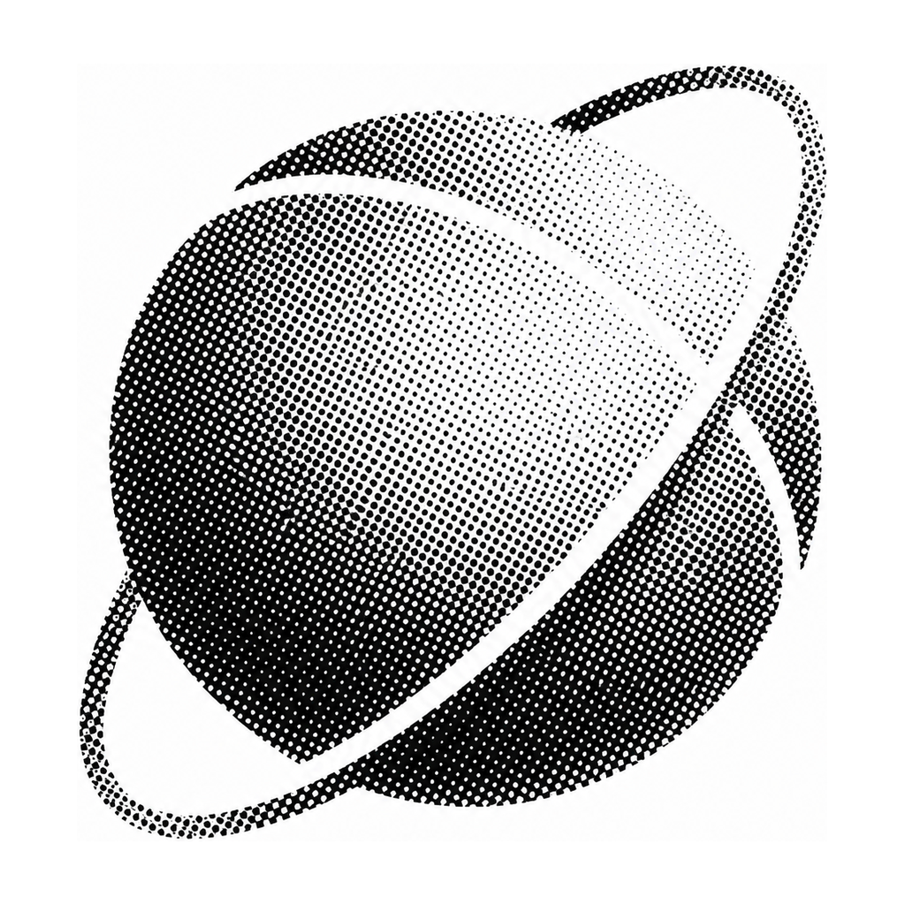

Team lead
Operations, support, and founders need shared agents on the web, Telegram, and WhatsApp. They do not need only personal ChatGPT.

Atlas
Atlas gives each team or each client agents, memory, and channels on one platform.
Open source platform for AI agents
Problem
Who can use Atlas
Operations, support, and founders need shared agents on the web, Telegram, and WhatsApp. They do not need only personal ChatGPT.
One platform can hold many client organizations. Each client has isolated agents, memory, and channels.
Solution
You can install Atlas on your servers, as with WordPress. You can also use managed hosting.
Feature 1
Atlas is multi-tenant by design.
Feature 2
Agents keep context across sessions. Agents do not use only temporary chats.
SOUL.md
Identity
STYLE.md
Voice
INSTRUCTIONS.md
Operating rules
MEMORY.md
Facts across sessions
Team knowledge increases over time. Client organizations stay separate.
Feature 3
Use the channels that your team already uses.
Work examples
Connect external apps with Composio. Assign skills and tools to each profile.
Connect Google Drive, Docs, and Sheets. Read and change documents.
Create, change, and review calendar events.
Read email. Write and send replies.
Configure an agent to edit short videos.
Start Codex, Claude Code, OpenCode, or Cursor Agent. Write and change code, including Atlas itself.
Schedule agent work on a timer for recurring tasks.
Comparison
Atlas is a platform for team agents.
Evidence
Mulai Uji Coba
./scripts/docker-build-run.sh # Buka dashboard: http://localhost:4310
docker run -d -p 4310:4310 \ -v atlas-data:/atlas/data \ --name atlas \ ghcr.io/kungfufafa/atlas:latest # Buka dashboard: http://localhost:4310